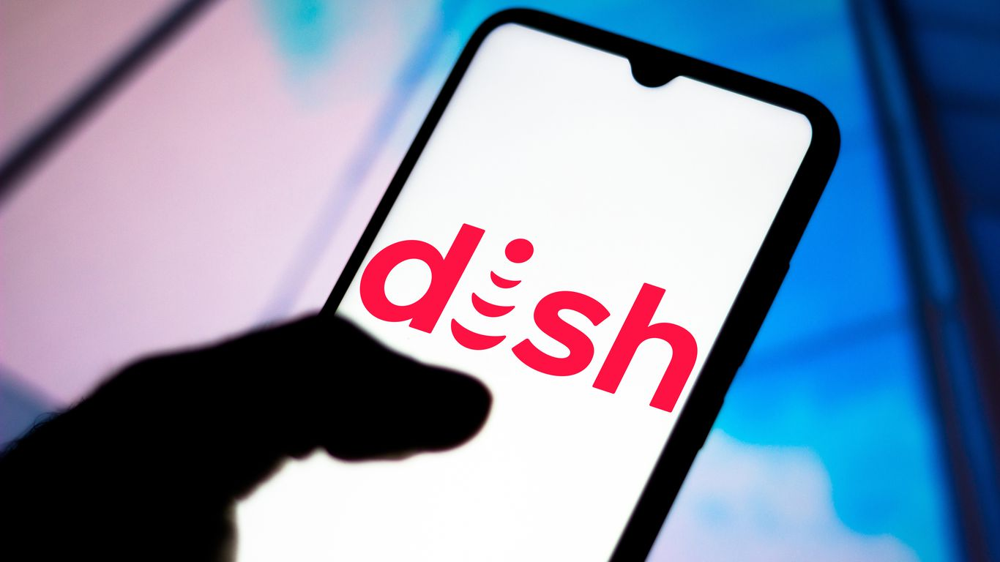

Scoop: Dish wants California regulators to reopen T-Mobile inquiry

Dish Network says that T-Mobile has gone back on promises it made in order to win permission to buy Sprint and is asking the California Public Utilities Commission to enforce the company's pre-merger commitments.
Why it matters: The effort, which follows a complaint to the FCC, centers around T-Mobile's decision to end support for Sprint's older CDMA network at the beginning of next year — a network still used by the majority of Dish's customers.
The big picture: T-Mobile's acquisition was controversial and the ultimate approval was conditioned upon selling Sprint's prepaid business to Dish.As part of that, Dish is using T-Mobile's network while it builds out its own 5G network from scratch.
The latest: In its petition to California regulators, Dish says that T-Mobile is going against a public commitment to operate the CDMA network for three years.
'T-Mobile’s January 1, 2022 date is inconsistent with prior statements the company made to the Commission – in sworn testimony and written briefs – that the network will be operational for
at least
Dish is asking the California PUC to reopen its merger investigation for the purpose of forcing T-Mobile to live up to that commitment.Dish has said it believes T-Mobile is trying to use the network shutoff as a way to get back the very prepaid customers it sold to Dish.
The other side: T-Mobile, for its part, has said it provided Dish with more than the 6 months notice required in its contract with the satellite firm.It maintains that it is Dish's responsibility to convert its customers over to phones compatible with T-Mobile's current network, just as it is doing for former Sprint customers still on the older network.
Posted On: 2021-04-26T00:00:00
Posted By: Ina Fried
Content Date: 2021-04-26
Download Date: 2021-05-15
Document ID: L0C04CFOG